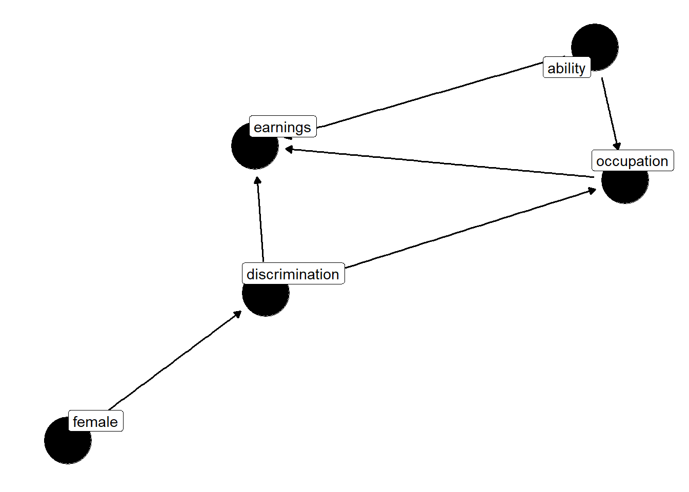

8.1 Llaudet, E. and Imai, K. (2022). Data analysis for social science: A friendly and practical introduction. Princeton University Press. Chapter 5: Estimating Causal Effects with Observational Data.
[…] to estimate causal effects, we must find or create a situation in which the treatment and control groups are comparable with respect to all the variables that might affect the outcome other than the treatment variable itself. Only when this assumption is satisfied can we use the average factual or observed outcome of one group as a good estimate of the average counterfactual outcome of the other group. (p. 130)
To estimate causal effects using observational data, we have to first identify any relevant differences between treatment and control groups – known as confounding variables or confounders – and then statistically control for them so that we can make the two groups as comparable to each other as possible. (p. 130)
The confounding variable, also known as a confounder, is a variable that affects both (i) the likelihood of receiving the treatment and (ii) the outcome \(Y\). (p. 130)
In the extreme, by affecting both \(X\) and \(Y\) at the same time, confounding variables might create a completely spurious relationship between \(X\) and \(Y\), misleading us into thinking that \(X\) and \(Y\) are causally related to each other when, in fact, there is no direct causal link between the two. (p. 132)
In short, when there is a confounding variable \(Z\) affecting \(X\) and \(Y\), we should not trust correlation as a measure of causation, and thus, we cannot use the difference-in-means estimator to estimate average causal effects. (p. 132)
Why don’t we have to worry about confounders in randomized experiments? Randomization of treatment assignment eliminates all potential confounders. It ensures that treatment and control groups are comparable by breaking the link between any potential confounder and the treatment. (p. 133)
Para controlar por outras variáveis, usamos regressões múltiplas:
Agora, ao invés de o ajuste do modelo aos dados resultar em uma reta, o ajuste do modelo aos dados resulta em um plano que minimiza a soma dos quadrados das distâncias entre os pontos e o plano. O modelo de regressão múltipla é uma extensão do modelo de regressão simples, onde temos mais de uma variável independente.
Do ponto de vista de interpretação dos coeficientes, \(\hat{\alpha}\) é a média de \(Y\) quando todas as variáveis independentes são zero. O coeficiente \(\hat{\beta}_j\) é a variação esperada em \(Y\) quando \(X_j\) aumenta uma unidade, mantendo todas as outras variáveis independentes constantes (ceteris paribus, como costumam dizer em economia).
In other words, the difference in the average outcomes between the treatment and control groups that remain after holding all confounding variables constant can now be directly attributed to their difference with respect to the treatment (treated vs. untreated); no other differences between the two groups are in play. (p. 145)
8.2 Cunningham, S. (2022). Causal Inference: the mixtape. Yale University Press. Chapter 3: Directed Acyclic Graphs.
Using directed acyclic graphical (DAG) notation requires some up-front statements. The first thing to notice is that a DAG notation, causality runs in one direction. […]. There are no cycles in a DAG. […]. Third, DAGs explain causality in terms of counterfactuals. That is, a causal effect is defined as a comparison between two states of the world – one state that actually happened when some intervention took on some value and another state that didn’t happen (the “counterfactual”) under some other intervention.
Nodes represent random variables, and those random variables are assumed to be created by some data-generating process. Arrows represent a causal effect between two random variables moving in the intuitive direction of the arrow. The direction of the arrow captures the direction of causality.
A DAG is meant to describe all causal relationships relevant to the effect of \(D\) on \(Y\). What makes the DAG distinctive is both the explicit commitment to a causal effect pathway and the complete commitment to the lack of a causal pathway represented by missing arrows. […]. In other words, a DAG will contain both arrows connecting variables and choices to exclude arrows. And the lack of an arrow necessarily means that you think there is no such relationship in the data – this is one of the strongest beliefs you can hold. A complete DAG will have all direct causal effects among the variables in the graph as well as all common causes of any pair of variables in the graph.
Two, through concepts such as the backdoor criterion and collider bias, a well-designed DAG can help you develop a credible research design for identifying the causal effects of some intervention.
In this DAG, we have three random variables: \(X\), \(D\), and \(Y\). There is a direct path from \(D\) to \(Y\), which represents a causal effect. That path is represented by \(D \rightarrow Y\). But there is also a second path from \(D\) to \(Y\) called the backdoor path. While the direct path is \(D \leftarrow X \rightarrow Y\). While the direct path is a causal effect, the backdoor path is not causal. Rather, it is a process that creates spurious correlations between \(D\) and \(Y\) that are driven solely by fluctuations in the \(X\) random variable. […]. We therefore call \(X\) a confounder because it jointly determines \(D\) and \(Y\), and so confounds our ability to discern the effect of \(D\) on \(Y\) in naive comparisons.
Um caso particular é quando a variável \(X\) não é observada pelo pesquisador. Nesse caso, “the backdoor path is open” e, do ponto de vista de notação, as setas são “dashed”.
This is a simple story to tell, and the DAG tells it well, but I want to alert your attention to some subtle points contained in this DAG. The DAG is actually telling two stories. It is telling what is happening, and it is telling what is not happening. For instance, notice that has no direct effect on the child’s earnings except through its effect on schooling. Is this realistic, though? Economists have long maintained that unobserved ability both determines how much schooling a child gets and directly affects the child’s future earnings, insofar as intelligence and motivation can influence careers. But in this DAG, there is no relationship between background and earnings, which is itself an assumption. And you are free to call foul on this assumption if you think that background factors affect both schooling and the child’s own productivity, which itself should affect wages. So what if you think there should be an arrow from \(B\) to \(Y\)? Then you would draw one and rewrite all the backdoor paths between \(D\) and \(Y\).
When two variables cause a third variable along some path, we call that third variable a “collider”. Put differently, \(X\) is a collider along this backdoor path because \(D\) and the causal effects of \(Y\) collide at \(X\). But so what? What makes a collider so special? Colliders are special in part because when they appear along a backdoor path, that backdoor path is closed simply because of their presence. Colliders, when they are left alone, always close a specific backdoor path.
We care about open backdoor paths because they create systematic, noncausal correlations between the causal variable of interest and the outcome you are trying to study. In regression terms, open backdoor paths introduce omitted variable bias, and for all you know, the bias is so bad that it flips the sign entirely. Our goal, then, is to close these backdoor paths. And if we can close all of the otherwise open backdoor paths, then we can isolate the causal effect of \(D\) on \(Y\) using one of the research designs and identification strategies discussed in this book. So how do we close a backdoor path?
There are two ways to close a backdoor path. First, if you have a confounder that has created an open backdoor path, then you can close that path by conditioning on the confounder. Conditioning requires holding the variable fixed using something like subclassification, matching, regression, or another method. It is equivalent to “controlling for” the variable in a regression. The second way to close a backdoor path is the appearance of a collider along that backdoor path. Since colliders always close backdoor paths, and conditioning on a collider always opens a backdoor path, choosing to ignore the colliders is part of your overall strategy to estimate the causal effect itself. By not conditioning on a collider, you will have closed that backdoor path and that takes you closer to your larger ambition to isolate some causal effect.
When all backdoor paths have been closed, we say that you have come up with a research design that satisfies the backdoor criterion. And if you have satisfied the backdoor criterion, then you have in effect isolated some causal effect. But let’s formalize this: a set of variables \(X\) satisfies the backdoor criterion in a DAG if and only if \(X\) blocks every path between confounders that contain an arrow from \(D\) do \(Y\).
The issue of conditioning on a collider is important, so how do we know if we have that problem or not? No data set comes with a flag saying “collider” and “confounder.” Rather, the only way to know whether you have satisfied the backdoor criterion is with a DAG, and a DAG requires a model. It requires in-depth knowledge of the data-generating process for the variables in your DAG, but it also requires ruling out pathways. And the only way to rule out pathways is through logic and models. There is no way to avoid it—all empirical work requires theory to guide it. Otherwise, how do you know if you’ve conditioned on a collider or a noncollider? Put differently, you cannot identify treatment effects without making assumptions.
library(ggdag)
Warning: pacote 'ggdag' foi compilado no R versão 4.4.3
Anexando pacote: 'ggdag'
O seguinte objeto é mascarado por 'package:stats':
filter
library(ggplot2)theme_set(theme_dag())dag <-dagify(Y ~ D, Y ~ A, O ~ A, D ~ F, O ~ D, Y ~ O,labels =c("D"="discrimination","Y"="earnings","O"="occupation","F"="female","A"="ability"),latent ="A")ggdag(dag, text =FALSE, use_labels ="label")

But in this example, we aren’t interested in estimating the causal effect of being female on earnings; we are interested in estimating the effect of discrimination itself. New, you can see several noticeable paths between discrimination and earnings. They are as follows:
\(D \rightarrow O \rightarrow Y\)
\(D \rightarrow O \leftarrow A \rightarrow Y\)
The first path is not a backdoor path; rather, it is a path whereby discrimination is mediated by occupation before discrimination has an effect on earnings. This would imply that women are discriminated against, which in turn affects which jobs they hold, and as a result of holding marginally worse jobs, women are paid less. The second path relates to that channel but is slightly more complicated. In this path, unorbserved ability affects both which jobs people get and their earnings.
So let’s say we regress \(Y\) onto \(D\), our discrimination variable. This yields the total effect of discrimination as the weighted sum of both the direct effect of discrimination on earnings and the mediated effect of discrimination on earnings through occupational sorting. But say that we want to control for occupation because we want to compare men and women in similar jobs. Well, controlling for occupation in the regression closes down the mediation channel, but it then opens up the second channel. Why? Because \(D \rightarrow O \leftarrow A \rightarrow Y\) has a collider \(O\). So when we control for occupation, we open up this second path. It had been closed because colliders close backdoor paths, but since we conditioned on it, we actually opened it instead. This is the reason we cannot merely control for occupation. Such a control ironically introduces new patterns of bias.
What is needed is to control for occupation and ability, but since ability is unobserved, we cannot do that, and therefore we do not possess an identification strategy that satisfies the backdoor criterion. Let’s now look at code to illustrate this DAG.
library(tidyverse)
── Attaching core tidyverse packages ──────────────────────── tidyverse 2.0.0 ──
✔ dplyr 1.1.4 ✔ readr 2.1.5
✔ forcats 1.0.0 ✔ stringr 1.5.1
✔ lubridate 1.9.3 ✔ tibble 3.2.1
✔ purrr 1.0.2 ✔ tidyr 1.3.1
── Conflicts ────────────────────────────────────────── tidyverse_conflicts() ──
✖ dplyr::filter() masks ggdag::filter(), stats::filter()
✖ dplyr::lag() masks stats::lag()
ℹ Use the conflicted package (<http://conflicted.r-lib.org/>) to force all conflicts to become errors
library(stargazer)
Please cite as:
Hlavac, Marek (2022). stargazer: Well-Formatted Regression and Summary Statistics Tables.
R package version 5.2.3. https://CRAN.R-project.org/package=stargazer
[…] if we run the regression that Google and others recommend wherein we control for occupation, the sign on gender changes. It becomes positive! We know this is wrong because we hard-coded the effect of gender to be \(-1\)! The problem is that occupation is a collider. It is caused by ability and discrimination. If we control for occupation, we open up a backdoor path between discrimination and earnings that is spurious and so strong that it perverts the entire relationship. So only when we control for occupation and ability can we isolate the direct causal effect of gender on wages.
8.3 Other materials
An introduction to DAGs and ggdag by Malcolm Barrett [link]
Papers published by Carolina Caetano, an Assistant Professor of Economics at the University of Georgia [link]